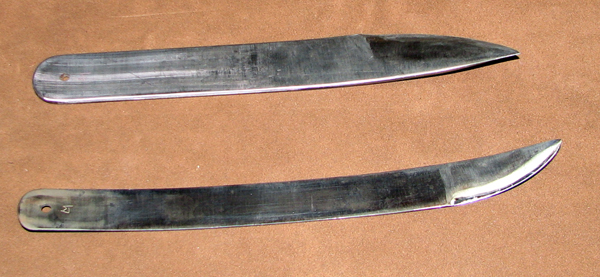
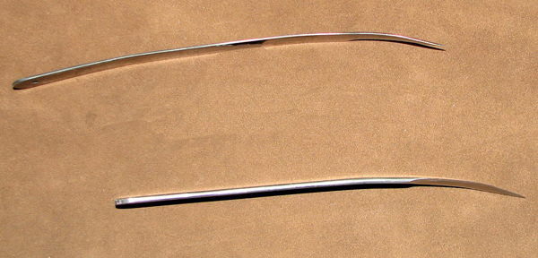
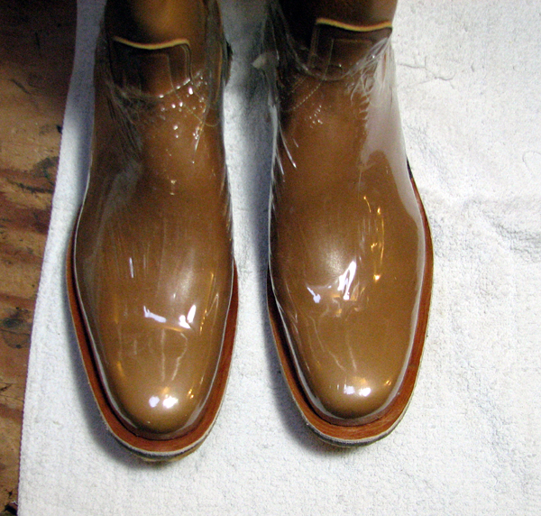

Shoe and Boot Maker Tools and Supplies
Hard to find tools and supplies from Romango Handmade Shoes.
From LM Metal Works - Shoemaker's knives.
Made from 5160 high carbon steel. Left handed blade for general cutting and pull skiving, right handed blade for push skiving. (Reverse these uses if you are left handed).


After some research, this product was chosen as the best for protecting shoe uppers while inseaming and preparing soles. 200 mil Shrink wrap, 8 inch tube. Although this wrap is in tube form, it needs to be cut to make a smaller tube.

Copyright © 2007-2011 romangoshoes.com
All rights reserved